Never lose a thread again.
You run an agent inside Elpis, and it becomes Elpis.
Elpis is an open-source fork of OpenAI's Codex CLI that keeps the proven execution foundation while adding explicit context control, durable continuity, auditable pruning, and provider-neutral ownership around the model loop.

Install • Features • Evaluation • Docs
Elpis v0.2.0 is available for Linux x86_64. Start with the versioned guide or interactive demo. The accepted release passed its exact-source shipping checks. The release tag, not this development branch, identifies the shipped runtime.
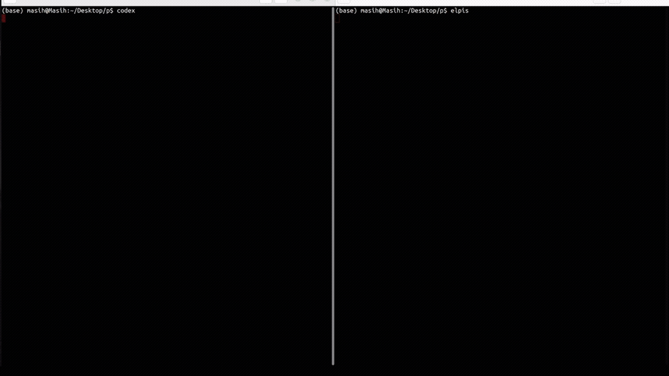
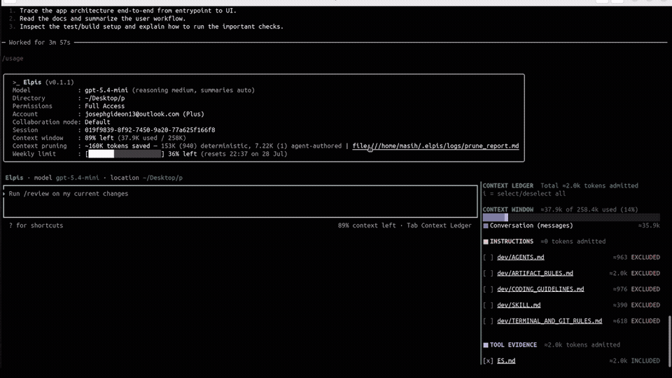
Concept walkthrough of the admission flow — Smart Prune scanning a completed tool result before the main model sees it (illustrated with fixture data, not a captured session):
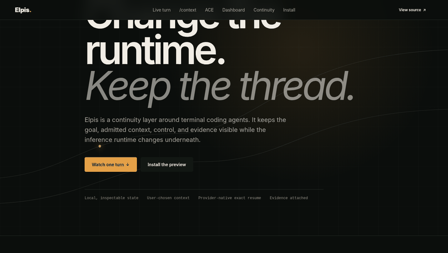
Current development interface · September 9
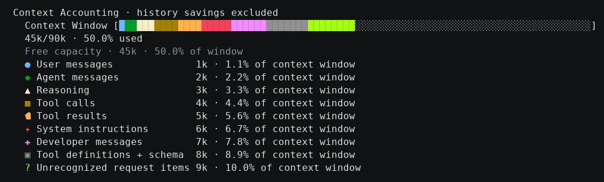
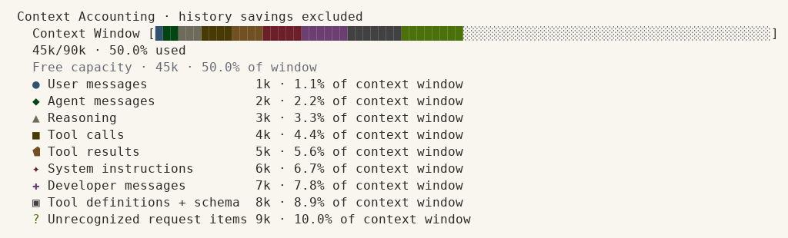
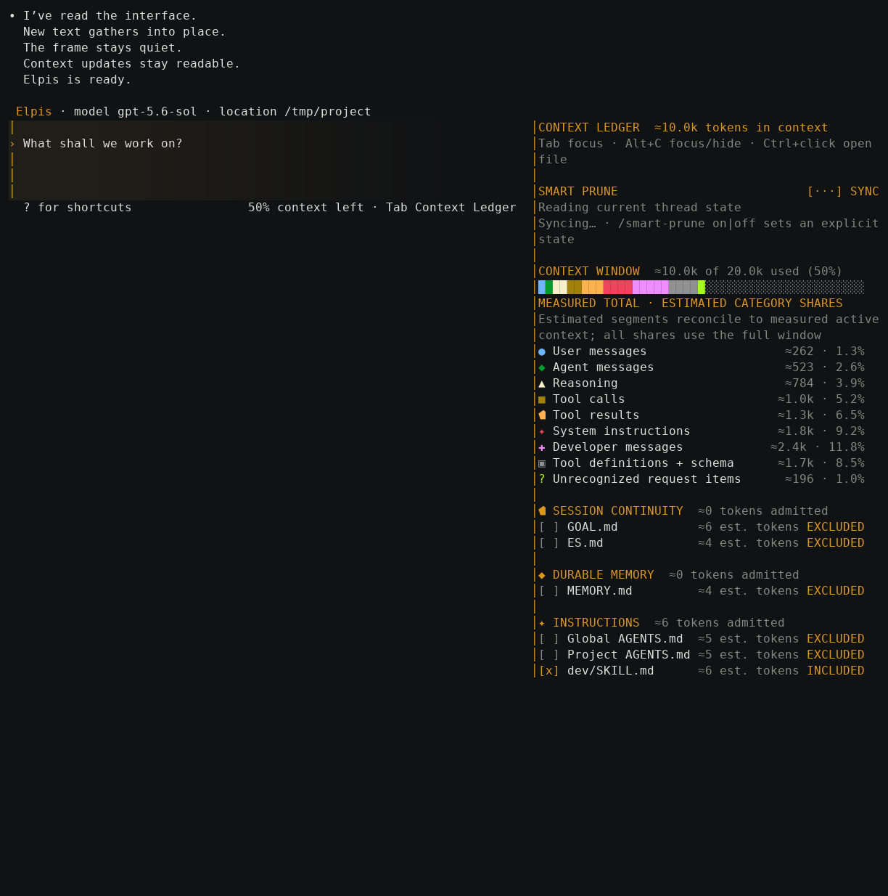
September 9 development preview · local visual updates to UI
commit 40838f83. Native Rust widget captures with
illustrative session data: matching context colors, visible unused
capacity, readable Elpising motion, startup dissolve, and coalescing
responses. These changes are newer than the September 5
v0.2.0 release; the screenshots are not a promise that the
release contains them.
Contents
Quickstart
Linux x86_64; macOS and Windows are not included in v0.2.0. Review the installer before running it:
curl -fsSL https://raw.githubusercontent.com/MasihMoafi/Elpis/v0.2.0/scripts/install-elpis.sh | bash && ~/.local/bin/elpisThe installer downloads the latest published Elpis Linux binary and verifies its SHA-256 sidecar. RTK is an optional, separate shell-output filter; this installer does not install it. On first launch, choose a provider and sign in or enter its API key.
v0.2.0 is the current release.
What is Elpis
Elpis is a provider-neutral coding-agent environment. The selected model or runtime performs inference; Elpis owns the surrounding working state: context admission, continuity, memory, permissions, tools, evidence, and the terminal interface.
It starts from OpenAI's Apache-2.0 Codex CLI and preserves its execution foundation — terminal UI, patches, permissions, sandboxing, sessions, and tool lifecycle — while adding a continuity- first control layer around it. Change the provider without throwing away the project context. Nothing about the project has to be explained twice.
Different paths. Same roots. One shared project.
Why Elpis
Long sessions fill up with transcripts, file reads, searches, command output, and dead ends. The useful state gets buried in the story of how the agent reached it, while every request pays for more context.
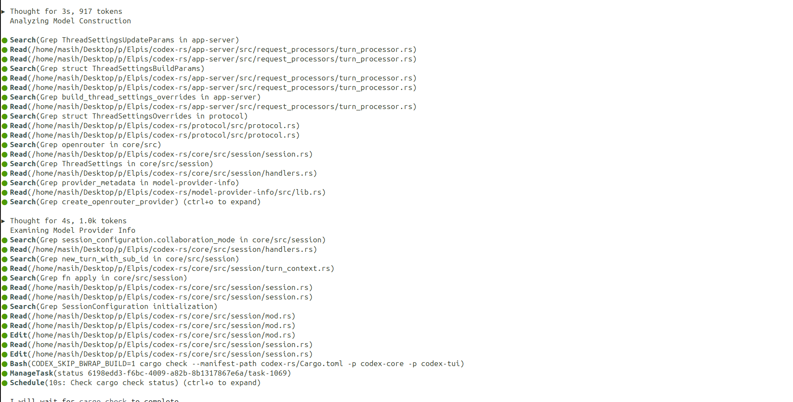
Elpis separates the active working set from durable evidence. The next request receives a small, inspectable context; the exact record stays on disk and can be retrieved when it is needed.
Three paired configured historical runs with automatic pruning enabled under the superseded high-frequency setup used one byte-identical prompt, the same model, and the same source commit on both arms. In those runs, peak context per request fell 47–65%; median context stabilized at 26.6–27.1%. Codex peaked above 90% of the window in each run, while Elpis stayed safely bounded in the green zone.
Elpis never modifies a model's own output or a request already in flight. Pruning rewrites only harness-supplied tool output, using a separate model instance sequenced against the main agent.
Core Features
Context engineering
Context is a budgeted working set, not a dumped transcript. Elpis makes admission visible and uses a layered pipeline to keep useful findings while removing disposable exploration:
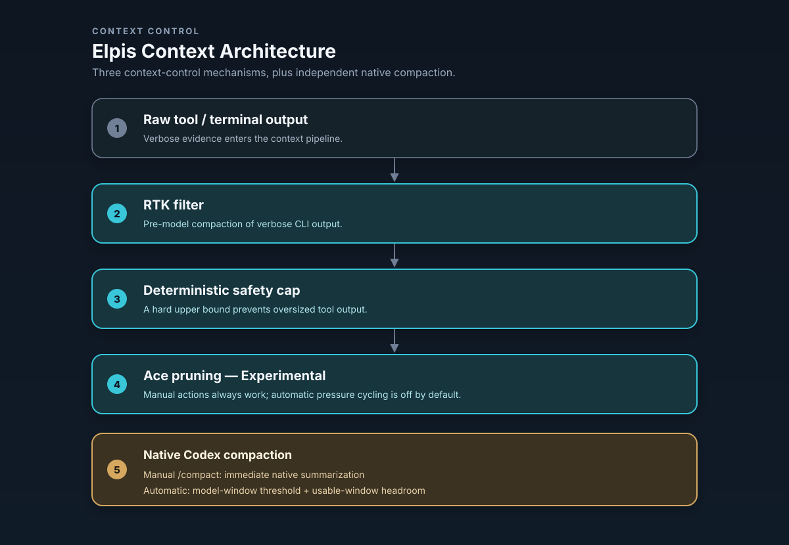
| Layer | What it does | When |
|---|---|---|
| 1. RTK shell-output filtering | Compacts supported command output before it reaches the model. | Before the agent sees it |
| 2. Deterministic safety cap | Bounds exceptionally large tool results. This is inherited from Codex. | Before the agent sees it |
| 3. Smart Prune — Experimental | Optimizes eligible fresh tool results before the main model's first exposure to them. Once admitted, Smart Prune does not revisit that history. | /prune enables it for subsequent turns;
/force-prune <1-100> remains an explicit one-shot
action that may reduce prompt-cache reuse |
/prune enables Smart Prune (the ACE pruning layer) for
subsequent turns without rewriting already-sent history.
/force-prune <1-100> is an explicit emergency action
that may reduce prompt-cache reuse. /compact immediately
runs Codex native compaction, independent of Smart Prune. Automatic
native compaction uses the model-window threshold and usable-window
headroom. Smart Prune is Experimental and off by default;
/settings saves its value for the next turn while leaving
any turn already in flight unchanged.
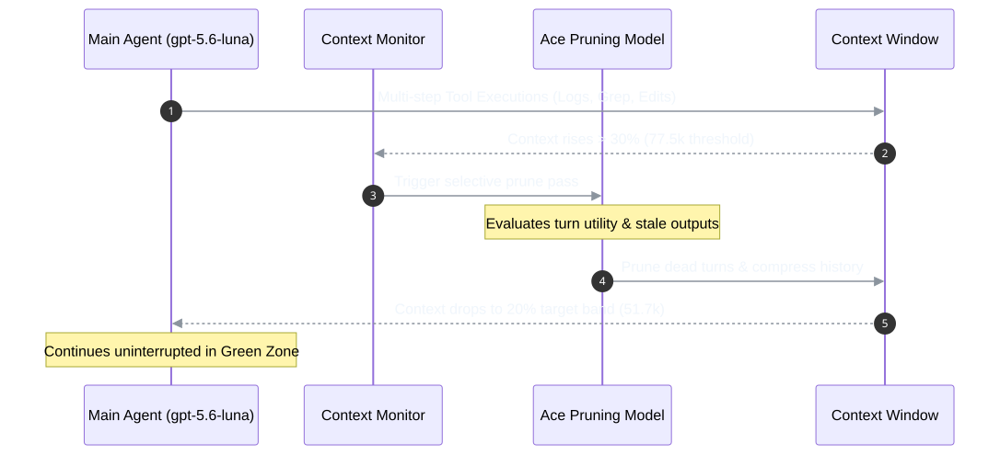
This diagram illustrates the automatic, threshold-triggered pressure-cycling configuration used in the historical evaluation runs below — retired, and not current default behavior. Current Smart Prune optimizes a fresh tool result once, before its first admission, and never revisits already-sent history the way this sequence shows.
Historical emergency-pruning example
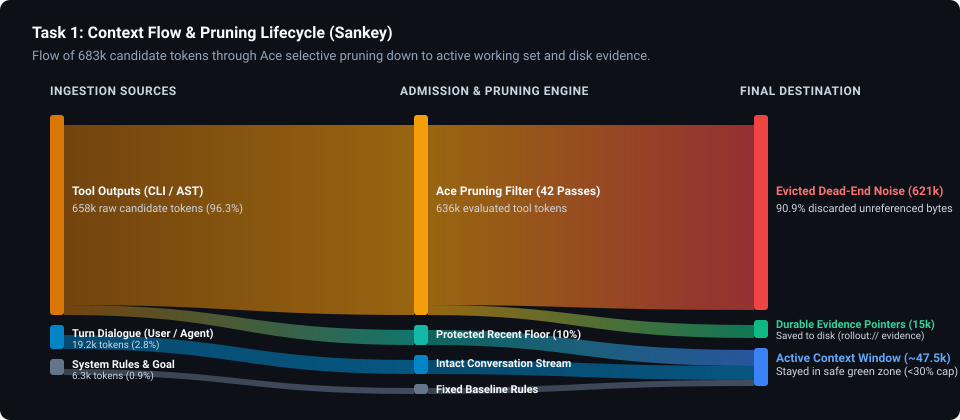
From a configured historical run with automatic pruning enabled under the superseded high-frequency setup (42 passes shown here; not current default behavior). One real pass from disk. A search command whose raw output ran to 18,930 characters — close to 5,000 tokens carried across requests:
Before — what the model was carrying:
Script completed · Wall time 0.1 seconds · Output:
tui/src/external_agent_config_migration.rs:800: item_type: …ItemType::AgentsMd,
tui/src/external_agent_config_migration_flow.rs:75: …ItemType::AgentsMd
tui/src/theme_picker.rs:283: fn theme_picker_subtitle(home: …) -> String
tui/src/theme_picker.rs:392: subtitle: Some(theme_picker_subtitle(
tui/src/theme_picker.rs:605: let subtitle = theme_picker_subtitle(…, Some(200));
tui/src/theme_picker.rs:617: let subtitle = theme_picker_subtitle(…, Some(140));
tui/src/app_event.rs:152: OpenAgentPicker,
… roughly two hundred more lines of the same shape …After — what the model carries on the next request:
[Ace pruned 231 lines of ripgrep output (18,930 chars → 248 chars).
Findings:
- Found ItemType::AgentsMd in external_agent_config_migration.rs:800
- Found theme_picker_subtitle definitions in theme_picker.rs:283,392,605,617
- Full raw output preserved in rollout evidence: rollout://sess-01j8/tool-14.log]Context Ledger and observability
The Context Ledger (Tab; during an
active turn, Alt+C always toggles it) lists admitted goals,
rules, memory, and other portable sources with their byte sizes and
capped character-derived estimates. Toggling a row writes
admission.toml, which controls what the next turn
receives.
Development rules are ordinary Markdown Ledger rows, not skills:
newly discovered rules start included and an explicit exclusion
persists. A nonempty configured development-rule root list replaces the
managed fallback; an empty list uses it. Elpis leaves ordinary and
bundled skills off by product default, while deliberate user
configuration can enable a selected skill. Enabled skills expose compact
metadata and keep their bodies lazy; /skills shows
available candidates and their origins, but mentions and the
model-visible list contain enabled skills only. The Ledger has no
skills-catalog token row; its per-source estimates are not tokenizer
measurements.
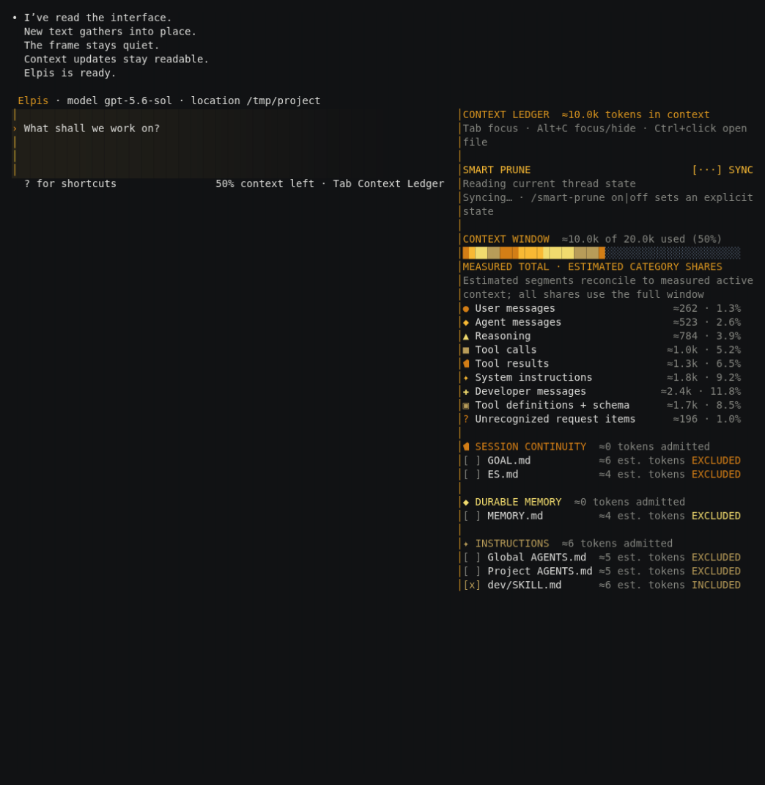
In v0.2.0, Ledger and /context share category colors and
a full-window scale. They distinguish active context usage from locally
estimated request categories: user and agent messages, reasoning, tool
calls/results, instructions, developer messages, and tool definitions.
Category estimates are not provider-billed counts. Available backtrack
checkpoints and local evidence links remain inspectable.
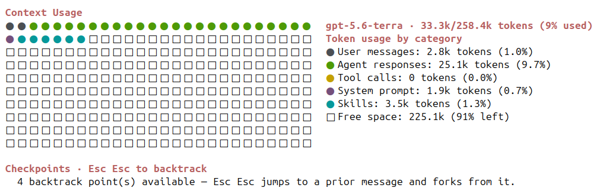
Earlier category-view capture; this image is retained to explain
/context, not the September 9 appearance.
Live session dashboard
/dashboard opens a local HTML view in your browser — no
transcript content leaves the machine. It gives the same context and
token accounting as the Ledger and /context, plus what a
turn is doing right now and, when Smart Prune (the ACE pruning layer
above) is on, its admission and optimizer-cost accounting:
The September 9 development dashboard also supports authorized pruner settings edits. The captures below use the checked-in illustrative fixture, with preview settings disabled. Their counters are demonstration data, not experiment results.
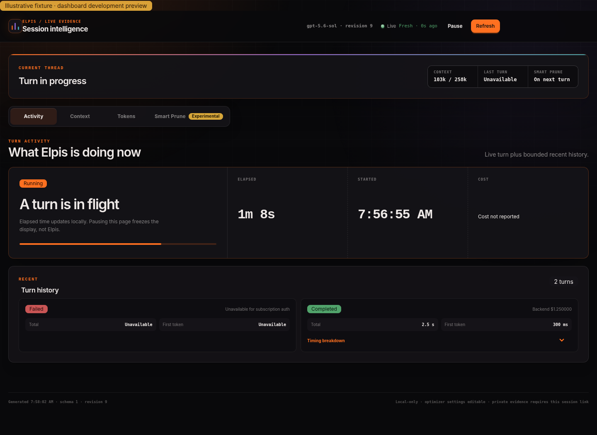
Context — window composition and admitted sources
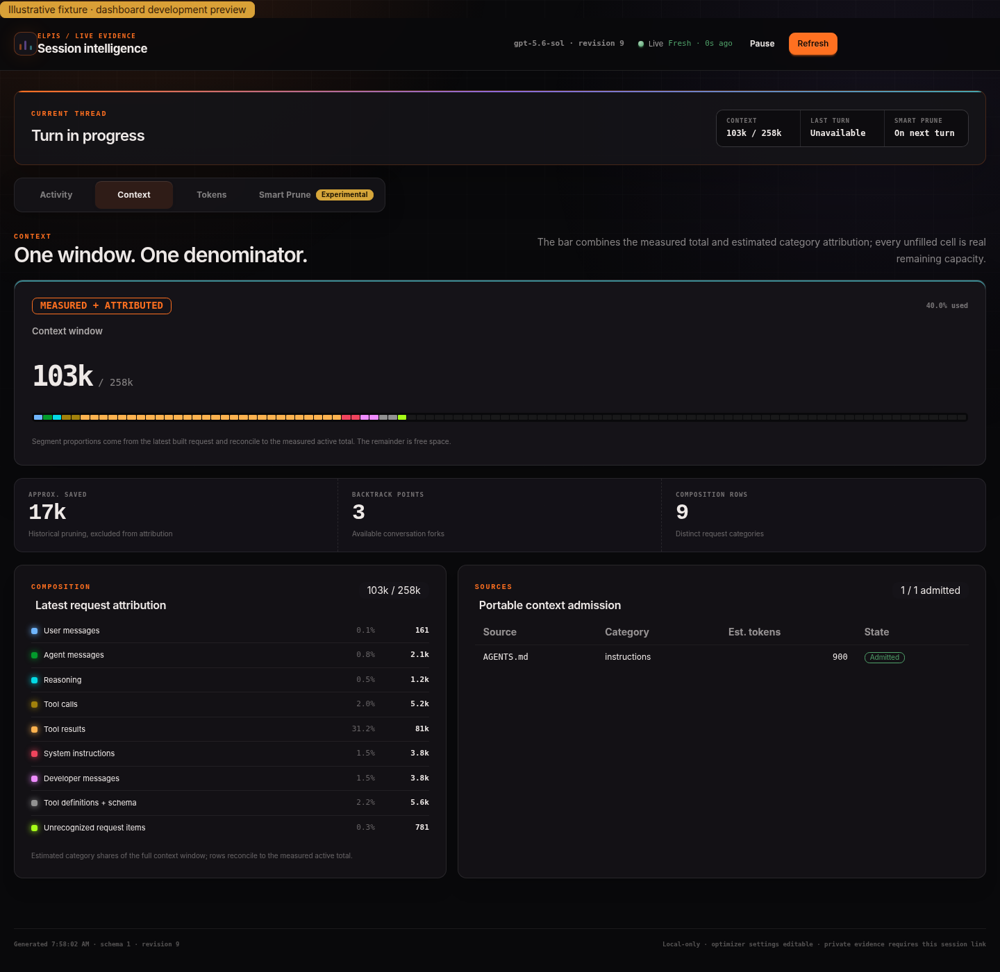
Tokens — recorded usage breakdown
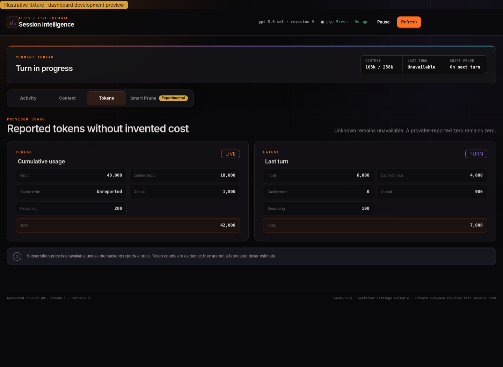
Smart Prune — settings, accounting, and failure evidence
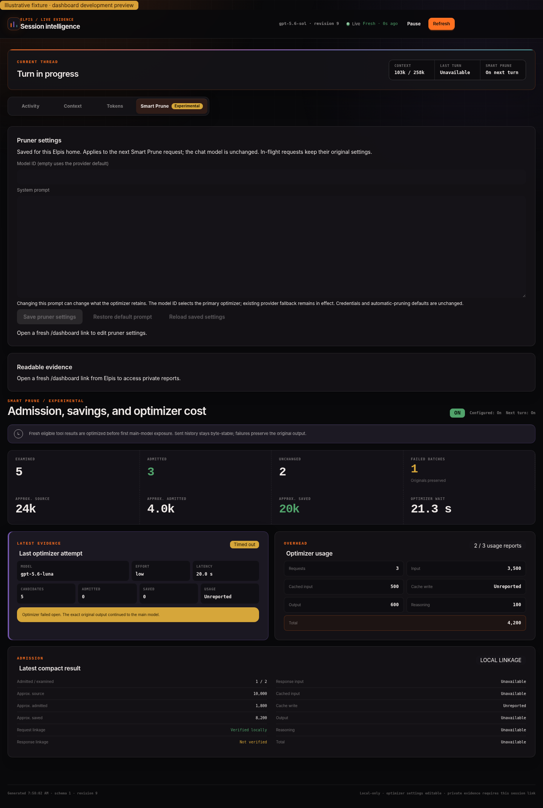
Sessions and continuity
Keep the working context across model switches, compaction, and restarts:
GOAL.mdholds the current task. It is carried into each request, stays visible across compaction, and is editable during a run.ES.mdis an event-derived executive summary. It records modified files, commands run, blockers, and next steps, and is updated as the run progresses.- Exact resume continues an existing thread with its full history, using the provider-native session when one is available.
- Lean continuation starts a clean thread from the
current
GOAL.md,ES.md, and active rules. This sheds old exploration without losing the objective.
Memory
Durable memory is one Markdown file, MEMORY.md, in the
Elpis memory directory (derived from CODEX_HOME). The
Context Ledger discovers it and lists it as a row, switched
off until you admit it: like every optional row, memory
does not reach the model unasked.
- One visible file. Plain text. Read it, edit it, commit it to git, or delete it.
- Admitted in the open. Because it is a Ledger row, you can always see whether memory reached the model, switch it on when you want it, and drop it when you do not.
- Retrieval beyond that file is your choice. Register an MCP server — for example rag-mcp — and Elpis will use it.
Elpis previously ran an extraction, consolidation, and promotion pipeline. It was removed because it did not work: across two threshold settings it produced zero durable promotions, every sweep landing one recall short of the gate. Memory that rewrites itself in the background without appearing anywhere is the failure mode the Ledger row exists to prevent.
Deterministic work graphs
A coordinator can fan work out to several agents under an engine that validates the plan before anything runs. This is Elpis's own; it is not part of the Codex foundation.

The coordinator submits a complete task graph — tasks, dependencies, write scopes, acceptance criteria, and environments. Elpis then owns the scheduling:
- Cycles cannot be scheduled. Kahn's topological algorithm proves the graph is acyclic and rejects it otherwise, so no worker is created for a plan that could only deadlock.
- Write conflicts are caught by construction. Path-prefix intersection detects overlapping write scopes, and all writable tasks in one environment are serialized even when their declared prefixes do not overlap.
- Verification is not optional. A writable task
without a directly dependent
verifytask in the same environment is rejected before dispatch. - Evidence gates progress. Dependent work is released only after an accepted result; a failed, cancelled, or blocked prerequisite blocks its descendants.
Elpis never creates, merges, rebases, deletes, or pushes branches or worktrees. Preparing and integrating them stays coordinator-owned, because those operations change durable user state and deserve deliberate review.
Off by default. Enable with enable_fanout = true under
[features]; there is no slash command. Full rules and the
graph schema are in docs/WORK_GRAPHS.md.
Bring your own provider
Elpis is not tied to a single model vendor:
- OpenAI: GPT-4o, GPT-5.6-Luna, o1, o3, and compatible endpoints.
- Anthropic: Claude 3.5 Sonnet, Claude 3 Opus, Claude 3.5 Haiku.
- Google: Gemini 2.0 Flash, Gemini 1.5 Pro.
- Local & self-hosted: Ollama, vLLM, and any OpenAI-compatible server.
Switch models mid-session without restarting. The working context, goal, and session memory are preserved across provider boundaries.
Integrations and tools
Extend Elpis with external capabilities that stay in their own processes through MCP:
- Workspace retrieval: rag-mcp provides local LanceDB/Tantivy search over your documents.
- Voice transcription: WhisperType provides local speech-to-text without adding its model/runtime dependencies to Elpis core.
Privacy and ownership
Telemetry is off by default and no analytics are uploaded unless you explicitly configure an exporter. Bring your own provider keys. Durable Elpis state is local files and SQLite that you can inspect, edit, export, or delete.
Evaluation status
Evidence reviewed September 9, 2026. RQ1, RQ2, and RQ5 below describe historical evaluations. RQ4 includes the newer frozen-build cost study: 61 accepted pairs in 17 batches. Neither study benchmarks the latest UI binary. See the content and evidence audit.
The historical evaluation reports three paired, byte-identical
configured workloads on gpt-5.6-luna (258,400 token context
window), using a superseded high-frequency pruning setup. These runs
share a workload and do not establish general task quality.
RQ1: Context Reduction & Operating Hygiene
Across those configured historical runs, Elpis maintained working sets within safe operational thresholds.
Peak Context Utilization
In those configured historical runs, Codex expanded into the critical danger zone (>90% window) in every run, forcing 3 emergency compactions. Elpis maintained peak window utilization at 32.5–49.5%, achieving a 47–65% reduction in peak context footprint:
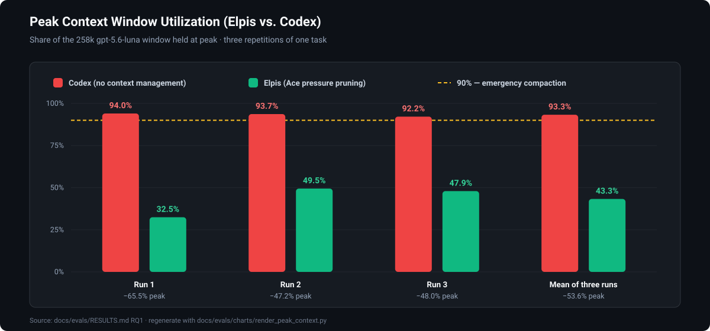
Input Token Distribution & Interquartile Stability
In those configured historical runs, Codex suffered wide distribution variance as transcripts accumulated, while Elpis tightly stabilized median token input at 68.8k–69.6k tokens (26.6%–27.0% of the window):
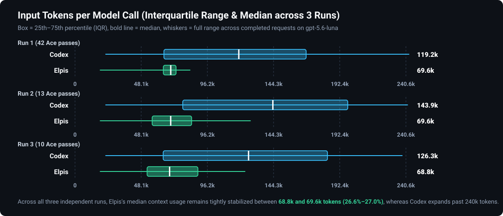
Trajectory Dynamics across Context Health Bands
When normalized across the recorded request lifecycle (0% to 100% completion), the historical Codex trace grows toward emergency rollover. The Elpis trace shown here uses automatic pruning under the superseded high-frequency setup; it is not current default behavior:
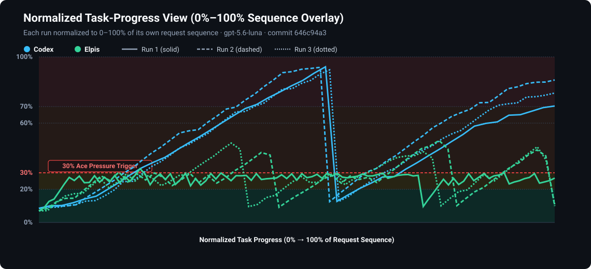
Operating Zone Breakdown
Across those configured historical requests, Elpis spent over 95% of its operating lifespan inside the safe and healthy bands, with zero requests entering the critical danger zone:
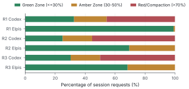
RQ2 & RQ3: Target Retention & Task Quality
- RQ2 (Information Retention): In benchmark audits testing recall of key file paths, schemas, and error signatures after pruning, 100% of tested targets (6/6) were retained intact in active context.
- RQ3 (Task Performance): Not established. The executed runs are incomplete and unreplicated, so they do not support a comparative correctness claim in either direction. No per-arm score is reported, and there is no evidence that pruning improves task completion or output quality.
RQ4: Pruning Overhead & Token Economics
The September 9 cost
study measures fresh-output admission on frozen binary
d58e8c9b8861, using synthetic fixtures. Costs include
main-agent and optimizer usage, priced at recorded
September 8 rates; they are estimates, not invoices. Cache-hit fractions
were observed, not controlled.
| Requests per session | Optimizer effort | Accepted pairs | Estimated cost change vs. off |
|---|---|---|---|
| 3 | Max | 8 | +162.5% |
| 3 | Medium | 5 | +41.4% |
| 3 | Low | 8 | +54.5% |
| 3 | None | 8 | +24.8% |
| 11 | Low | 8 | −3.0% |
| 35 | Low | 8 across two batches | −9.8% |
| 35 | None | 8 | −20.9% |
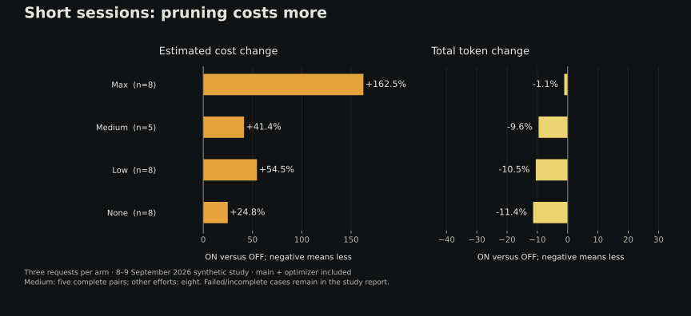
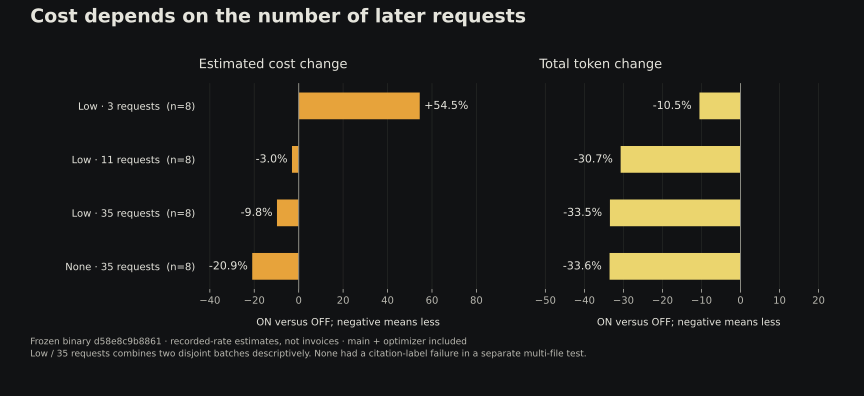
Longer runs can amortize optimizer cost; short runs cost more in
these fixtures. The two Low/35 batches are a descriptive aggregation,
not a pooled significance claim. A separate None-effort multi-file probe
failed exact citation fidelity. Timeouts, stalls, format misses, and
exclusions remain in the full report. These results do
not establish real-repository task quality or universal
savings. The chart data and
provenance are regenerated from the recorded metrics by
python3 scripts/refresh-public-evidence.py.
Historical overhead, retained for comparison:
Pruning adds an auxiliary model call sequenced against the main agent, and rewriting history invalidates the provider's cached prefix. Both costs are real. The figures below are configured historical runs with automatic pruning enabled under the superseded high-frequency setup; they bound that configuration's penalty rather than describe the current default: 730,810 auxiliary tokens spent to reclaim 605,377 context tokens (0.83 reclaimed per spent token).
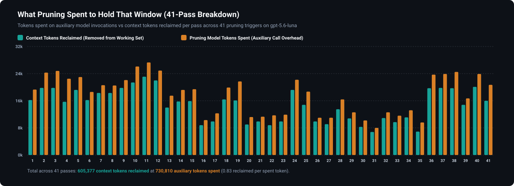
RQ5: Forensic Auditability
Every pruning event produces an immutable audit record on disk under
~/.elpis/logs/pruning/. In full forensic reconstruction
evaluations, 7 of 9 properties were completely
recoverable from disk, 2 partial, and 0 absent.
| Research Question | Empirical Finding |
|---|---|
| RQ1 — Context Efficiency | Historical superseded high-frequency setup: peak reduction of 47–65%; median context stabilized at 26.6–27.0% of the 258k window. |
| RQ2 — Information Retention | 6/6 tested post-prune targets preserved intact (100% retention). |
| RQ3 — Task Performance | Not established. The available runs do not support a comparative correctness claim. |
| RQ4 — Pruning Economics | Frozen synthetic study: short sessions cost more; longer sessions can cost less. Quality and general savings remain unproven. |
| RQ5 — Forensic Auditability | Historical audit: 7/9 properties fully recoverable, 2 partial, 0 absent properties. |
Current UI verification
The other implementation agent's September 9 report records 127 focused passing tests covering motion, startup, streaming, the ledger, and status; native frame exports and an installed PTY smoke check also passed according to that report. This content audit did not independently rerun those UI checks. This is scoped regression evidence, not a clean full-suite claim: pre-existing suite failures remain. The cost/pruning calculators passed 18 tests, and all 17 cost batches reproduced from the archived records without a discrepancy. See the audit for the separate build identities, test scope, chart provenance, and public-content checks.
Documentation
- Context and pruning — admission, lifetimes, pressure pruning, and audit records
- Sessions
and continuity — exact resume, lean continuation,
GOAL.md, andES.md - Deterministic work graphs — plan validation, write scopes, concurrency, and evidence gates
- Providers — provider adapters, BYOK, and protocol limitations
- Evals & benchmarks — source data, procedures, scorers, and results
- Technical guide — product thesis, requirements, and architecture
- Research paper — technical preprint draft, not a completed comparative-results paper
License
Apache-2.0.
The execution foundation — terminal UI, patches, permissions,
sandboxing, and sessions — derives from OpenAI's Apache-2.0 Codex CLI.
Elpis extends that foundation with context admission and pruning,
continuity checkpoints, auditable evidence, and provider control.
Codex-derived source retains its upstream notices under
codex-rs/.